토목기사 (2008-09-07 기출문제)
1과목: 응용역학
1. 그림과 같은 반경이 r인 반원 아치에서 ND 점의 축방향력의 크기는 얼마인가?
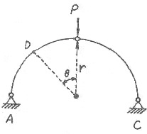
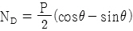
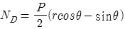
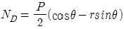
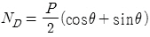
(정답률: 64%)

2. 수직응력 σx = 10kg/cm2, σy = 20kg/cm2와 전단응력 τxy = 5kg/cm2을 받고 있는 아래 그림과 같은 평면응력 요소의 최대 주응력을 구하면?
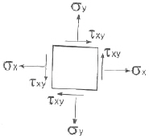
- 22.1kg/cm2
- 23.1kg/cm2
- 24.1kg/cm2
- 25.1kg/cm2
(정답률: 67%)
3. 길이 50mm, 지름 10mm의 강봉을 당겼더니 5mm 늘어났다면 지름의 줄어든 값은 얼마인가? (단, 포와송비 ʋ = 1/3이다.)
- 1/3mm
- 1/4mm
- 1/5mm
- 1/6mm
(정답률: 73%)
4. 길이가 6m인 양단힌지 기둥은 I-250×125×10×19(단위:mm) 의 단면으로 세워졌다. 이 기둥이 좌굴에 대해서 지지하는 임계하중(critical load)은 얼마인가? (단, 주어진 I-형강의 I1과 I2는 각각 7340cm4과 560cm4이며, 탄성계수 E = 2×106kg/cm2이다.)
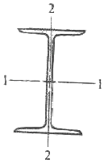
- 30.7 t
- 42.6 t
- 307 t
- 402.5 t
(정답률: 70%)
5. 다음 그림과 같이 강선 A와 B가 서로 평형상태를 이루고 있다. 이때 각도 θ의 값은?
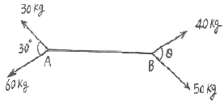
- 47.2°
- 32.6°
- 28.4°
- 17.8°
(정답률: 74%)
6. 정사각형의 목재 기둥에서 길이가 5m라면 세장비가 100이되기 위한 기둥단면 한 변의 길이로서 옳은 것은?
- 8.66 cm
- 10.38 cm
- 15.82 cm
- 17.32 cm
(정답률: 67%)
7. 다음 그림과 같은 단면을 가지는 단순보에서 전단력에 안전하도록 하기 위한 지간 L은? (단, 허용전단응력은 7kg/cm2이다.)
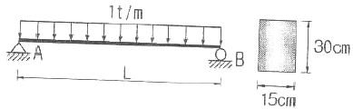
- 450cm
- 440cm
- 430cm
- 420cm
(정답률: 39%)
8. 그림과 같은 3힌지 라멘의 휨모멘트선도(BMD)는?
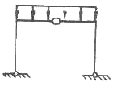
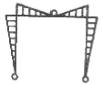
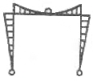
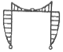
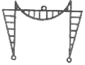
(정답률: 81%)
9. 다음 그림에서 A-A 축과 B-B 축에 대한 빗금부분의 단면 2차 모멘트가 각각 80000cm4, 160000cm4일 때 빗금 부분의 면적은 얼마가 되는가?
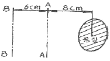
- 800cm2
- 606cm2
- 806cm2
- 700cm2
(정답률: 71%)
10. 그림의 보에서 지점 B의 휨모멘트는? (단, EI는 일정하다.)
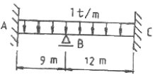
- -6.75 tㆍm
- -9.75 tㆍm
- -12 tㆍm
- -16.5 tㆍm
(정답률: 56%)
11. 다음 그림과 같이 A지점이 고정이고 B지점이 힌지(hinge)인 부정정 보가 어떤 요인에 의하여 B지점이 B'의 지점반력은?
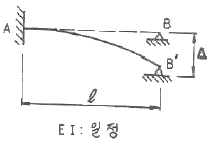
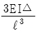
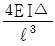
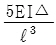
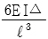
(정답률: 64%)
12. 단순보에 그림과 같이 하중이 작용시 C점에서의 모멘트값은?
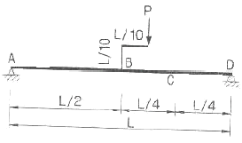
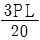
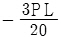
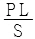
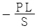
(정답률: 48%)
13. 다음 그림과 같은 단순보 형식의 정정라멘에서 F점의 휨모멘트 MF값은 얼마인가?
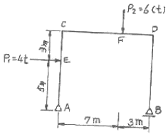
- 28.6 tㆍm
- 21.6 tㆍm
- 12.6 tㆍm
- 18.6 tㆍm
(정답률: 39%)
14. 내민보를 갖는 단순 지지보에 C점에서 휨 모멘트는?
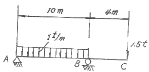
- 60 tㆍm
- 15 tㆍm
- 12.5 tㆍm
- 0 tㆍm
(정답률: 57%)
15. 다음과 같이 1변이 a인 정사각형 단면의 1/4 을 절취한 나머지 부분의 도심위치
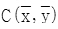
는?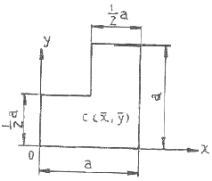
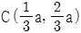
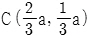
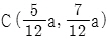
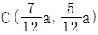
(정답률: 40%)
16. 그림과 같은 트러스에서 A점에 연직하중 P가 작용할때 A 점의 연직처짐은?
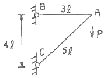
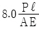
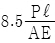
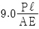
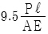
(정답률: 76%)
17. 그림의 트러스에서 연직 부재 V의 부재력은?
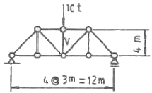
- 10t (인장)
- 10t (압축)
- 5t (인장)
- 5t (압축)
(정답률: 73%)
18. 그림과 같은 보의 C점의 연직처짐은?
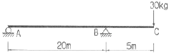
- 1.525 cm
- 1.875 cm
- 2.525 cm
- 3.125 cm
(정답률: 37%)
19. 그림과 같은 I형 단면의 최대전단응력은? (단, 작용하는 전단력은 4000kg 이다.)
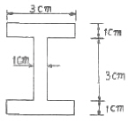
- 897.2 kg/cm2
- 1065.4 kg/cm2
- 1299.1 kg/cm2
- 1444.4 kg/cm2
(정답률: 66%)
20. 다음의 단순보에서 A점의 반력이 B점의 반력의 3배가 되기 위한 거리 x는 얼마인가?
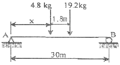
- 3.75m
- 5.04m
- 6.06m
- 6.66m
(정답률: 66%)
2과목: 측량학
21. 삼각측량과 삼변측량에 대한 설명으로 틀린 것은?
- 삼변측량은 변 길이를 관측하여 삼각점의 위치를 구하는 측량이다.
- 삼각측량의 삼각망 중 가장 정확도가 높은 망은 사변형 삼각망이다.
- 삼각점의 선점시 기계나 측표가 동요할 수 있는 습지나 하상은 피한다.
- 삼각점의 등급을 정하는 주된 목적은 표석설치를 편리하게 하기 위함이다.
(정답률: 58%)
22. 축척이 1:600인 지도상에서 면적을 1:500 축척인 것으로 측정하여 38.675m2을 얻었다. 실제면적은 얼마인가?
- 26.858m2
- 32.274m2
- 47.495m2
- 55.692m2
(정답률: 52%)
23. 다음 중에서 고속도로에 주로 사용되는 곡선의 종류가 아닌 것은?
- 클로소이드
- 원곡선
- 2차포물선
- 3차포물선
(정답률: 40%)
24. 측지삼각측량과 평면삼각측량 사이에 생기는 구과량에 대한 설명을 옳지 않은 것은?
- 거리측량의 정도를 1/106로 할 때 380km2이내에서는 구과량에 대한 보정이 필요 없다.
- n 다각형의 구과량은 180° (n-2)보다 크거나 작은 양이 구과량이 된다.
- 구면 삼각형에 대한 구과량은 ε는 ε = [(구면 삼각형의 면적)/(지구의 곡률반경)2× p로 구할 수 있다.
- 비교적 좁은 범위 내에서는 구과량을 3등분하여 구면삼각형의 각 내각에 보정함으로써 평면 삼각형으로 보고 계산할 수 있다.
(정답률: 29%)
25. 도로설계에서 상향 종단 기울기 3%, 하향 종단 기울기 4%인 종단면에 종단 곡선을 2차포물선으로 설치할 때 시점으로부터 장현을 따라 50m인 지점의 절토고(y:종거)는 얼마인가? (단, 종단 곡선 거리 l = 180m)
- 0.436m
- 0.486m
- 1.138m
- 1.575m
(정답률: 37%)
26. 교각(I) = 52° 50′, 곡선반경(R) = 300m인 기본형 대칭 클로소이드를 설치할 경우 클로소이드의 시점과 교점(I.P)간의 거리(D)는 얼마인가? (단, 원곡선의 중심(M)의 X 좌표(XM) = 37.480m, 이정량(△R) = 0.781m 이다.)
- 148.03m
- 149.42m
- 185.51m
- 186.90m
(정답률: 40%)
27. A점에서 관측을 시작하여 A점으로 폐합시킨 폐합 트래 버스 측량에서 다음과 같은 측량결과를 얻었다. 이때 측선 BC의 배횡거는?
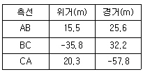
- 0 m
- 25.6 m
- 57.8 m
- 83.4 m
(정답률: 61%)
28. 10km×10km인 정방형의 지역을 항공사진 촬영하고자 할 때 필요한 사진 매수는? (단, 간이 계산법에 의하며, 사진축척 1:10000, 사진크기 23cm× 23cm, 종중복도 60%, 횡중복도 30%, 안전율은 고려하지 않음)
- 60 매
- 65 매
- 68 매
- 71 매
(정답률: 58%)
29. 교점(I.P)의 위치가 기점으로부터 400m, 곡선 반지름 R = 200m, 교각 I = 90° 인 원곡선에서 기점으로부터 곡선 시점(B.C)의 추가거리는?
- 180 m
- 190 m
- 200 m
- 600 m
(정답률: 60%)
30. 축척 1/10000, 종중복도 60%인 항공사진을 180km/h로 촬영할 경우 허용흔들림양을 사진상에서 0.02m로 한다면 최장노출시간(Tℓ)은? (단, 사진의 크기는 23cm×23cm임)
- 0.001 sec
- 0.002 sec
- 0.004 sec
- 0.008 sec
(정답률: 55%)
31. 범지구측위체계(GPS)를 이용한 측량의 특징으로 옳지 않은 것은?
- 3차원 공간 계측이 가능하다.
- 기상의 영향을 거의 받지 않으며 야간에도 측량이 가능하다.
- Bessel 타원체에 기반한 경위도 좌표정보를 수집함으로 좌표정밀도가 높다.
- 기선 결정의 경우 두 측점 간의 시통에 관계가 없다.
(정답률: 54%)
32. 단일환의 수준망에서 관측결과로 생긴 폐합오차를 보정하는 방법으로 옳은 것은?
- 모든 점에 등배분한다.
- 출발 기준점으로부터 거리에 비례하여 배분한다.
- 출발 기준점으로부터의 거리에 반비례하여 배분한다.
- 각 점의 표고 값 크기에 비례하여 배분한다.
(정답률: 43%)
33. 1600m2의 정사각형 토지면적을 0.5m2까지 정확하게 구하기 위해서 필요한 변길이의 최대 허용 오차는?
- 6mm
- 8mm
- 10mm
- 12mm
(정답률: 45%)
34. 지오이드(Geoid)에 대한 설명 중 옳지 않은 것은?
- 평균해수면을 육지까지 연장한 가상적인 곡면을 지오이드라 하며 이것은 지구타원체와 일치한다.
- 지오이드는 중력장이 등포텐셀면으로 볼 수 있다.
- 실제로 지오이드면은 굴곡이 심하므로 측지 지량의 기준으로 채택하기 어렵다.
- 지구타원체의 법선과 지오이드의 법선 간의 차이를 연직선 편차라 한다.
(정답률: 49%)
35. 외심오차가 0.2mm일 때 앨리데이드 자의 가장자리와 시준선 사이의 간격이 20mm이고 제도오차가 0.2mm 허용된다면 평판의 중심맞추기 오차(편심거리)는 최대 얼마까지 허용 할 수 있는가?
- 1 cm
- 2 cm
- 3 cm
- 4 cm
(정답률: 28%)
36. 직접고저측량을 실시한 결과가 그림과 같을 때, A점의 표고가 10m라면 C점의 표고는?
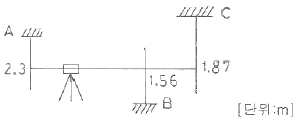
- 9.57 m
- 9.66 m
- 10.57 m
- 10.66 m
(정답률: 67%)
37. U.T.M 좌표에 대한 설명으로 옳은 것은?
- 중앙자오선에서의 축척계수는 0.9996 이다.
- 좌표계의 간격(Zone 간격)은 경도 3° 씩이다.
- 종 좌표(N)의 원점은 위도 38° 이다.
- 축척은 중앙자오선에서 멀어짐에 따라 작아진다.
(정답률: 45%)
38. 폐합트래버스 측량에서 전체 측선 길이의 합이 900m일 때 폐합비를 1/5000 로 하기 위해서는 축척 1/600의 도면에서 폐합오차는 얼마까지 허용되는가?
- 0.2mm
- 0.25mm
- 0.3mm
- 0.35mm
(정답률: 54%)
39. 항공삼각측량(aerial triangulation)에 대한 설명으로 옳은 것은?
- 항공기에서 지상 목표물에 전자파를 송수신하여 지점의 좌표를 결정하는 기법
- 항공사진에서 입체도화기 및 정밀좌표관측기에 의하여 사진상에서 무수한 점들의 좌표를 관측한 다음, 소수의 지상기준점의 성과를 이용하여 관측된 무수한 점들의 좌표를 조정기법에 의하여 절대 좌표로 환산하여 내는 기법
- 시간과 공간의 제약을 받지 않고 관측 및 결과를 얻기 위하여 개발된 기법
- 항공사진과 같이 대상물체, 지역 또는 현상에 대한 정보를, 직접 접촉하지 않는 장비에 의해 수집된 자료를 분석하는 기법
(정답률: 47%)
40. 1:25000 지도에서 등고선의 간격은?
- 주곡선 5m, 간곡선 2.5m, 조곡선 1.25m
- 주곡선 10m, 간곡선 5m, 조곡선 2.5m
- 주곡선 20m, 간곡선 10m, 조곡선 5m
- 주곡선 50m, 간곡선 25m, 조곡선 10m
(정답률: 67%)
3과목: 수리학 및 수문학
41. 수리수심(Hydraulic depth)을 가장 옳게 표현한 것은? (단, A는 유수단면적)
- 수심이 H 일 때 A/H 를 뜻한다.
- 윤변이 S 일 때 A/S 를 뜻한다.
- 수면폭이 B 일 때 A/B 를 뜻한다.
- 자유수면에서 수로바닥까지의 최대연직거리이다.
(정답률: 38%)
42. “층류상태에서는 ( )이 ( )보다 크게 되어 난류성분은 유체의 ( )에 의해서 모두 소멸된다.” ( )안에 들어갈 적절한 말이 순서대로 바르게 짝지어진 것은?
- 관성력, 점성력, 관성
- 점성력, 관성력, 점성
- 점성력, 중력, 점성
- 중력, 점성력, 중력
(정답률: 55%)
43. 다음 중 강수 결측 자료의 보완을 위한 추정 방법이 아닌 것은?
- 단순비례법
- 이중 누가우량 분석법
- 산술평균법
- 정상 연강수량 비율법
(정답률: 64%)
44. 마찰손실계수(f)와 Reynolds 수(Re) 및 상대조도(ε/d)의 관계를 나타낸 Moody 도표에 대한 설명으로 옳지 않은 것은?
- 층류와 난류의 물리적 상이점은 f- Re 관계가 한계 Reynolds 수 부근에서 갑자기 변한다.
- 층류영역에서는 단일 직선이 관의 조도에 관계없이 적용된다.
- 난류영역에서는 f- Re 곡선은 상대조도(ε/d)에 따라 변하며 Reynolds 수 보다는 관의 조도가 더 중요한 변수가 된다.
- 완전 난류의 완전히 거치른 영역에서 f는 Re과 반비례하는 관계를 보인다.
(정답률: 52%)
45. 수온 15℃에서 직경 0.5mm의 물방울이 있다. 물방울 내부의 압력이 대기압보다 6g/cm2만큼 크다면 이 경우의 표면장력의 크기는 얼마인가?
- 0.015g/cm
- 0.075g/cm
- 015g/cm
- 0.75g/cm
(정답률: 47%)
46. DAD 곡선을 작성하는 순서가 옳은 것은?
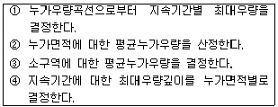
- ①-③-②-④
- ②-①-④-③
- ③-②-①-④
- ④-③-②-①
(정답률: 60%)
47. 폭이 넓은 직사각형 수로에서 배수곡선의 조건을 바르게 나타낸 항은? ( 단, I = 수로경사, Ie = 에너지경사, Fr = Rroude 수)
- i ＞ Ie, Fr ＜ 1
- i ＜ Ie, Fr ＜ 1
- i ＜ Ie, Fr ＞ 1
- i ＞ Ie, Fr ＞ 1
(정답률: 55%)
48. 그림과 같은 직사각형 수문은 수심 d가 충분히 커지면 자동으로 열리게 되어 있다. 수문이 열릴 수 있는 수심은 최소 얼마를 초과하여야 하는가?
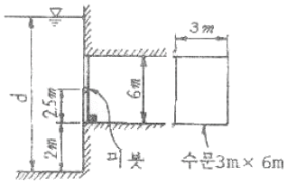
- 9m
- 10m
- 11m
- 12m
(정답률: 33%)
49. 연직판이 4m/sec의 속도로 움직이고 있을 때 움직임과 반대방향에서 유량 Q = 1.5m3/sec, 유속 V = 2m/sec로 부딪치는 수맥에 의한 판이 받는 힘은?
- 1224kg
- 918kg
- 612kg
- 306kg
(정답률: 28%)
50. 개수로에서 수리학적으로 유리한 단면의 조건에 해당되지 않는 것은? (단, H: 수심, R: 경심, P: 윤변, B: 수면폭, ℓ : 측벽의 경사거리, θ : 측벽의 경사)
- H를 반경으로 하는 반원에 외접
- R : 최대, P : 최소
- 직사각형 단면 : H = B/2, R = B/2
- 사다리꼴 단면 : ℓ = B/2, R = H/2, θ = 60°
(정답률: 59%)
51. 지하수의 흐름에 대한 Darcy의 법칙은? (단, V = 유속, △h = 길이, △ℓ에 대한 손실수두, k = 투수계수이다.)
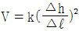
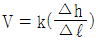
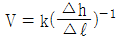
(정답률: 72%)
52. (문제 오류로 문제 및 보기 내용이 정확하지 않습니다. 정확한 내용을 아시는분께서는 오류신고를 통하여 내용 작성 부탁 드립니다. 정답은 3번입니다.)
- (복원중)
- (복원중)
- (복원중)
- (복원중)
(정답률: 50%)
53. 표고 20m인 저수지에서 물을 표고 50m인 지점까지 1.0m/sec의 물을 양수하는데 소요되는 펌프동력은? (단, 모든 손실수두의 합은 3.0m이며, 모든 관은 동일한 직경과 수리학적 특성을 지니고 펌프의 효율은 80%이다.)
- 248kw
- 330kw
- 4⑤kw
- 650kw
(정답률: 60%)
54. 다음 중 오리피스(orifice)에서 물이 분출할 때 일어나는 손실수두(△h)의 계산식이 아닌 것은?
(정답률: 53%)
55. 자연하천에서 여러 가지 이유로 인하여 수위-수량관계 곡선은 loop형을 이루고 있다. 그 이유가 아닌 것은?
- 배수 및 저수효과
- 홍수시 수위의 급변화
- 하도의 인공적 변화
- 하천유량의 계절적 변화
(정답률: 34%)
56. Dupuit의 침윤선 공식으로 옳은 것은? (단, q : 단위폭당의 유량, ℓ = 침윤선 길이, k = 투수계수)
(정답률: 58%)
57. 단위유량도 이론의 가정에 대한 설명으로 옳지 않은 것은?
- 초과강우는 유효지속기간 동안에 일정한 강도를 가진다.
- 초과강우는 전 유역에 걸쳐서 균등하게 분포된다.
- 주어진 지속기간의 초과강우로부터 발생된 직접유출수문곡선의 기저시간은 일정하다.
- 동일한 기저시간을 가진 모든 직접유출수문곡선의 종거들은 각 수문곡선에 의하여 주어진 총 직접유출수문곡선에 반비례한다.
(정답률: 44%)
58. 그림과 같은 관수로에서 에너지선(E.L)이 그림에 표시된 바와 같다면, 다음 설명 중 옳은 것은? (단, NB구간의 에너지선은 수평이다.)
- 물은 A 수조로부터 B, C 수조로 흐른다.
- 물은 A, B 수조로부터 C 수조로만 흐른다.
- 물은 A 수조로부터 C 수조로만 흐른다.
- 물은 A, C 수조로부터 B 수조로만 흐른다.
(정답률: 39%)
59. 다음 증발에 대한 설명 중 옳지 않은 것은?
- 증발면으로부터 수분의 이동은 바람과 바람에 의한 흐트러짐이 중요한 역할을 한다.
- 증발산량은 엄격한 의미에서 소비수량과 같다.
- 증발산량은 증발량과 증산량의 합이다.
- 증발접시계수는 증발접시 증발량에 대한 저수지 증발량의 비이다.
(정답률: 44%)
60. 다음 그림은 손실수두와 관속의 유속과의 관계를 나타내는 그림이다. 유속 Va 에 대한 설명으로 옳은 것은?
- 층류 → 난류로 변화하는 유속
- 난류 → 층류로 변화하는 유속
- 등류 → 부등류로 변화하는 유속
- 부등류 → 등류로 변화하는 유속
(정답률: 49%)
4과목: 철근콘크리트 및 강구조
61. 옹벽의 구조해석에 대한 설명으로 잘못된 것은?
- 부벽식 옹벽 저판은 정밀한 해석이 사용되지 않는 한, 부벽 간의 거리를 경간으로 가정한 고정보 또는 연속보로 설계할 수 있다.
- 저판의 뒷굽판은 정확한 방법이 사용되지 않는 한, 뒷굽판 상부에 재하되는 모든 하중을 지지하도록 설계하여야 한다.
- 캔틸레버식 옹벽의 추가철근은 저판에 지지된 캔틸레버로 설계할 수 있다.
- 뒷부벽식 옹벽의 뒷부벽은 직사각형보로 설계하여야 한다.
(정답률: 66%)
62. 그림과 같은 지간 10m 인 직사각형 단면의 철근콘크리트보에 10kN/m의 등분포하중과 100kN의 집중하중이 작용할 때 최대 처짐을 구하기 위한 유효단면 2차모멘트는? (단, 철근을 무시한 콘크리트 전체 단면의 중심축에 대한 단면2차모멘트(Ig) = 6.5×10mm, 균열단면의 단면2차모멘트(Icr) = 5.65×10mm, 외력에 의해 단면에서 휨균열을 일으키는 휨모멘트(Mcr) = 140kNㆍm)
- 4.563×109mm4
- 5.694×109mm4
- 6.838×109mm4
- 7.284×109mm4
(정답률: 33%)
63. 압축 이형철근의 겹침이음길이에 대한 설명으로 옳은 것은? (단, db는 철근의 공칭직경)
- 압축이형 철근의 기본정착길이(ldb)이상, 또한 200mm 이상으로 하여야 한다.
- fy가 500MPa 이하인 경우는 0.72fydb이상, fy가 500MPa을 초과할 경우는 (1.3ffy -24)db 이상이어야 한다.
- fy가 28MPa 미만인 경우는 규정된 겹침이음길이를 1/5 증가시켜야 한다.
- 서로 다른 크기의 철근을 압축부에서 겹침이음하는 경우, 이음길이는 크기가 큰 철근의 정착길이와 크기가 작은 철근의 겹침이음길이 중 큰 값 이상이어야 한다.
(정답률: 55%)
64. 강도설계법의 설계 기본가정 중에서 옳지 않은 것은?
- 철근 및 콘크리트의 변형률은 중립축으로부터의 거리에 비례한다.
- 인장 측 연단에서 콘크리트의 극한 변형률은 0.003으로 가정한다.
- 콘크리트의 인장강도는 철근콘크리트 휨계산에서 무시한다.
- 철근의 변형률이 fy에 대응하는 변형률보다 큰 경우 철근의 응력은 변형률에 관계없이 fy로 한다.
(정답률: 48%)
65. 그림과 같이 단순 지지된 2방향 슬래브에 등분포 하중 w가 작용할 때, ab 방향에 분배되는 하중은 얼마인가?
- 0.941w
- 0.⑤9w
- 0.889w
- 0.111w
(정답률: 50%)
66. 철근콘크리트 휨부재의 최소철근량에 대한 설명 중 틀린 것은?
- 보에서 철근량 As는 와 중 작은 값 이상이 되어야 한다.
- 부재의 모든 단면에서 해석에 의해 필요한 철근량보다 1/3 이상 인장철근이 더 배치되는 경우는 최소철근량 요건을 적용하지 않아도 된다.
- 휨 부재의 급작스러운 파괴를 방지하기 위해서 최소 철근량 규정이 제시되었다.
- 두께가 균일한 구조용 슬래브의 경간방향으로 보강되는 인장철근의 최소 단면적은 수축ㆍ온도 철근의 규정에 따라야 한다.
(정답률: 54%)
67. 직사각형 보에서 계수 전단력 Vu = 70kN을 전단철근 없이 지지하고자 할 경우 필요한 최소 유효깊이 d는 얼마인가? (단, bw = 400mm, fck = 21MPa, fy = 350MPa, ø = 0.75)
- d = 426mm
- d = 556mm
- d = 611mm
- d = 751mm
(정답률: 48%)
68. 강도설계법에서 강도감소계수(ø)를 규정하는 목적이 아닌 것은?
- 재료 강도와 치수가 변동할 수 있으므로 부재의 강도저하 확률에 대비한 여유를 반영하기 위해
- 부정확한 설계 방정식에 대비한 여유를 반영하기 위해
- 구조물에서 차지하는 부재의 대비한 여유를 반영하기 위해
- 하중의 변경, 구조해석할 때의 가정 및 계산의 단순화로 인해 야기될지 모르는 초과하중에 대비한 여유를 반영하기 위해
(정답률: 64%)
69. 아래 그림과 같은 두께 19mm 평판의 순단면적을 구하면? (단, 볼트구멍의 직경은 25mm이다.)
- 3270mm2
- 3800mm2
- 3920mm2
- 4530mm2
(정답률: 57%)
70. 나선철근 압축부재 단면의 심부지름이 400mm, 기둥단면 지름이 500mm 인 나선철근 기둥의 나선철근비는 최소 얼마 이상이어야 하는가? (단, 나선철근의 설계기준항복강도(fyt) = 400MPa, fck = 21MPa)
- 0.0133
- 0.0201
- 0.0248
- 0.0304
(정답률: 53%)
71. 다음은 프리스트레스 콘크리트에 관한 설명이다. 옳지 않은 것은?
- 탄력성과 복원성이 강한 구조이다.
- RC부재보다 경간을 길게 할 수 있고 단면을 작게 할 수 있다.
- RC에 비해 강성이 작아서 변형이 크고 진동하기 쉽다.
- RC보다 내화성에 있어서 유리하다.
(정답률: 54%)
72. 복철근 직사각형 보의 As'=1916mm2, As=4790mm2이다. 등가직사각형 블록의 응력 깊이(a)는? (단, fck = 21MPa, fy = 300MPa)
- 153mm
- 161mm
- 176mm
- 185mm
(정답률: 74%)
73. 그림과 같은 단순 PSC 보에서 등분포하중(자중포함) W = 30 kN/m가 작용하고 있다. 프리스트레스에 의한 상향력과 이 등분포 하중이 비기기 위해서는 프리스트레스 힘 P를 얼마로 도입해야 하는가?
- 900 kN
- 1200 kN
- 1500 kN
- 1800 kN
(정답률: 55%)
74. 그림과 같은 맞대기 용접의 용접부에 발생하는 인장응력은?
- 100MPa
- 150MPa
- 200MPa
- 220MPa
(정답률: 62%)
75. 전단철근이 받을 수 있는 최대 전단강도는? (단, fck는 콘크리트의 압축강도, bw는 보의 복푸폭, d는 보의 유효깊이이다.)
(정답률: 33%)
76. 철근콘크리트 부재에서 전단철근이 부담해야할 전단력이 400kN일때 부재축에 직각으로 배치된 전단철근의 최대간격은? (단, Av = 700mm2, fy = 350MPa, fck = 21MPa, bw = 400mm, d = 560mm)
- 140mm
- 200mm
- 300mm
- 343mm
(정답률: 35%)
77. 다음 중 용접부의 결함이 아닌 것은?
- 오버랩(over lap)
- 언더컷(undercut)
- 스터드(stud)
- 균열(crack)
(정답률: 41%)
78. 플랜지 유효폭이 b이고 복부폭이 bw인 복철근 T형보의 중립축이 복부에 있고 (-)휨모멘트가 작용할 때의 응력계산 방법이 옳은 것은?
- 폭이 b인 직사각형보로 계산
- 폭이 bw인 직사각형보로 계산
- T형보로 계산
- 어느 방법으로 계산해도 된다.
(정답률: 45%)
79. PSC 부재에서 프리스트레스의 감소 원인중 도입후에 발생하는 시간적 손실의 원인에 해당하는 것은?
- 콘크리트의 크리프
- 정착장치의 활동
- 콘크리트의 탄성수축
- PS 강재와 쉬스의 마찰
(정답률: 52%)
80. 경간 ℓ = 10m인 대칭 T 형보에서 양쪽 슬래브의 중심간격 2100m, 슬래브의 두께 t = 100mm, 복부의 폭 bw = 400mm일 때 플랜지의 유효폭은 얼마인가?
- 2000mm
- 2100mm
- 2300mm
- 2500mm
(정답률: 63%)
5과목: 토질 및 기초
81. 다짐에 대한 설명으로 옳지 않은 것은?
- 점토분이 많은 흙은 일반적으로 최적함수비가 낮다.
- 사질토는 일반적으로 건조밀도가 높다.
- 입도배합이 양호한 흙은 일반적으로 최적함수비가 낮다.
- 점토분이 많은 흙은 일반적으로 다짐곡선의 기울기가 완만하다.
(정답률: 53%)
82. 다짐되지 않은 두께 2m, 상대밀도 45%의 느슨한 사질토 지반이 있다. 실내시험결과 최대 및 최소 간극비가 0.85, 0.40으로 각각 산출되었다. 이 사질토를 상대 밀도 70%까지 다짐할 때 두께의 감소는 약 얼마나 되겠는가?
- 13.3cm
- 17.2cm
- 21.0cm
- 25.5cm
(정답률: 59%)
83. 다음 중 흙의 동상 피해를 막기 위한 대책으로 가장 적합한 것은?
- 동결심도 하부의 흙을 비동결성 흙(자갈, 쇄석)으로 치환한다.
- 구조물을 축조할 때 기초를 동결심도보다 얕게 설치한다.
- 흙속에 단열재료(석탄재, 코크스 등)를 넣는다.
- 하부로부터 물의 공급이 충분하도록 한다.
(정답률: 34%)
84. 흙의 비중 2.70, 함수비 30%, 간극비 0.90일 때 포화도는?
- 100%
- 90%
- 80%
- 70%
(정답률: 47%)
85. 연속 기초에 대한 Terzaghi의 극한지지력 공식은 qu = cㆍNc+0.5r1ㆍBㆍNr+r2ㆍDrㆍNq로 나타낼 수 있다. 아래 그림과 같은 경우 극한지지력 공식의 두 번째 항의 단위중량 r1의 값은?
- 1.44t/m3
- 1.60t/m3
- 1.74t/m3
- 1.82t/m3
(정답률: 57%)
86. 흙의 모관상승에 대한 설명 중 잘못된 것은?
- 흙의 모관상승고는 간극비에 반비례하고, 유효 입경에 반비례한다.
- 모관상승고는 점토, 실트, 모래, 자갈의 순으로 점점 작아진다.
- 모관상승이 있는 부분은 (-)의 간극수압이 발생하여 유효응력이 증가한다.
- Stokes법칙은 모관상승에 중요한 영향을 미친다.
(정답률: 34%)
87. 내부 마찰각 30°, 점착력 1.5t/m2 그리고 단위중량이 1.7t/m3인 흙에 있어서 인장균열(tension crack)이 일어나기 시작하는 깊이는?
- 2.2m
- 2.7m
- 3.1m
- 3.5m
(정답률: 58%)
88. 그림과 같은 옹벽에 작용하는 전주동 토압은? (단, 뒷채움 흙의 단위중량은 1.8t/m3, 내부마찰각은 30°이고, Rankine의 토압론을 적용한다.)
- 7.5 t/m
- 8.5 t/m
- 9.5 t/m
- 10.5 t/m
(정답률: 55%)
89. 다음 그림에서 A점의 간극 수압은?
- 4.87t/m2
- 6.67t/m2
- 12.31t/m2
- 4.65t/m2
(정답률: 47%)
90. 무게 320kg인 드롭햄머(drop hammer)로 2m의 높이에서 말뚝을 때려 박았더니 침하량이 2cm 이었다. Sander의 공식을 사용할 때 이 말뚝의 허용지지력은?
- 1,000kg
- 2,000kg
- 3,000kg
- 4,000kg
(정답률: 53%)
91. 다음 설명 가운데 옳지 않은 것은?
- 포화점토지반이 성토직후 급속히 파괴가 예상되는 경우 UU test를 한다.
- UU test는 전단시 간극수의 배수를 허용하지 않는다.
- CD test는 전단전에 압밀시킨 후 전단시 배수를 허용한다.
- 포화점토 지반이 시공중 함수비의 변화가 없을 것으로 예상될 때 CU test를 한다.
(정답률: 35%)
92. 자연상태의 모래지반을 다져 emin에 이르도록 했다면 이 지반의 상대밀도는?
- 0%
- 50%
- 75%
- 100%
(정답률: 60%)
93. 토질조사에서 사운딩(Sounding)에 관한 설aud 중 옳은 것은?
- 동적인 사운딩 방법은 주로 점성토에 유효하다.
- 표준관입 시험(S.P.T)은 정적인 사운딩이다.
- 사운딩은 보링이나 시굴보다 확실하게 지반구조를 알아낸다.
- 사운딩은 주로 원위치 시험으로서 의의가 있고 예비조사에 사용하는 경우가 많다.
(정답률: 44%)
94. 압밀에 대한 설명으로 잘못된 것은?
- 압밀계수를 구하는 방법에는 방법과 log t 방법이 있다.
- 2차 압밀량은 보통 흙보다 유기질토에서 더 크다.
- 교란된 시료로 압밀시험을 하면 실제보다 큰 침하량이 계산된다.
- log p-e곡선에서 선행하중(先行荷重)을 구할 수 있다.
(정답률: 32%)
95. 평판 재하 실험에서 재하판의 크기에 의한 영향(scale effect)에 관한 설명 중 틀린 것은?
- 사질토 지반의 지지력은 재하판의 폭에 비례한다.
- 점토지반의 지지력은 재하판의 폭에 무관한다.
- 사질토 지반의 침하량은 재하판의 폭이 커지면 약간 커지기는 하지만 비례하는 정도는 아니다.
- 점토지반의 침하량은 재하판의 폭에 무관한다.
(정답률: 62%)
96. 말뚝의 부마찰력(Negative Skin Friction)에 대한 설명 중 틀린 것은?
- 말뚝의 허용지지력을 결정할 때 세심하게 고려해야 한다.
- 연약지반에 말뚝을 박은 후 그 위에 성토를 한 경우 일어나기 쉽다.
- 연약지반을 관통하여 견고한 지반까지 말뚝을 박은 경우 일어나기 쉽다.
- 연약한 점토에 있어서는 상대변위의 속도가 느릴수록 부마찰력은 크다.
(정답률: 55%)
97. 접지압(또는 지반반력)이 그림과 같이 되는 경우는?
- 후팅 : 강성, 기초지반 : 점토
- 후팅 : 강성, 기초지반 : 모래
- 후팅 : 연성, 기초지반 : 점토
- 후팅 : 연성, 기초지반 : 모래
(정답률: 56%)
98. 다음 그림의 파괴포락선 중에서 완전포화된 점토를 UU(비압밀 비배수)시험했을 때 생기는 파괴포락선은?
- ①
- ②
- ③
- ④
(정답률: 66%)
99. 크기가 1m×2m인 기초에 10t/m2의 등분포하중이 작용할 때 기초아래 4m인 점의 압력증가는 얼마인가? (단, 2.1 분포법을 이용한다.)
- 0.67t/m2
- 0.33t/m2
- 0.22t/m2
- 0.11t/m2
(정답률: 45%)
100. 3m 두께의 모래층이 포화된 점토층 위에 놓여있다. 그림과 같이 지하수위는 1m 깊이에 있고 모관수는 없다고 할때 3m 깊이의 A점의 유효응력은?
- 5.31t/m2
- 4.64t/m2
- 3.97t/m2
- 3.31t/m2
(정답률: 30%)
6과목: 상하수도공학
101. 물의 맛ㆍ냄새의 제거 방법으로 식물성 냄새, 생선비린내, 황화수소냄새, 부패한 냄새의 제거에 효과가 있지만, 곰팡이 냄새 제거에는 효과가 없으며 페놀류는 분해할 수 있지만, 약품냄새 중에는 아민류와 같이 냄새를 강하게 할 수도 있으므로 주의가 필요한 처리방법은?
- 폭기방법
- 염소처리법
- 오존처리법
- 활성탄처리법
(정답률: 63%)
102. 부상식 슬러지 농축 방법에 대한 설명 중 틀린 것은?
- 중력농축에서 농축성이 나쁜 잉여슬러지 등을 대상으로 처리하는 경우가 많다.
- 기포를 발생시키는 방법에 따라 가압부상농축과 상압부상농축으로 나눌 수 있다.
- 공기/고형물 비(A/S)는 설계와 운전에 있어 중요한 인자이다.
- 계절변화의 영향을 받아 안정적인 운전이 어렵고, 특히 여름에 비하여 겨울에 농축이 어려운 것이 일반적이다.
(정답률: 43%)
103. 다음의 상수도 시설 중 송수시설을 바르게 설명한 것은?
- 취수 후의 원수를 정수시설까지 수송하는데 필요한 제반 시설
- 물의 수요변동을 흡수하고, 정수를 일정이상의 압력으로 수요자에게 공급하는 시설
- 급수관에서 분기하여 정수를 가정, 공장, 사업소 등에 끌어들여, 직접 수요자에게 물을 공급하는 시설로서 수요자가 부담하여 설치하는 시설
- 정수장에서 배수지까지 수송하는 시설
(정답률: 64%)
104. 양수량이 15mm3/min일 때 적합한 펌프의 구경은 약 얼마인가? (단, 흡입구의 유속은 2m/sec로 가정한다.)
- 200mm
- 300mm
- 400mm
- 500mm
(정답률: 47%)
1⑤. 어떤 상수원수의 Jar-test 실험결과 원수시료 200mL에 대해 0.1% PAC 용액 12mL를 첨가하는 것이 가장 응집효율이 좋았다. 이 경우 상수원수에 대해 PAC 용액 사용량은 몇 mg/L 인가?
- 40 mg/L
- 50 mg/L
- 60 mg/L
- 70 mg/L
(정답률: 57%)
106. 다음 중 슬러지의 침강을 방해하는 생물은?
- 사상균
- 바이러스
- 박테리아
- 원생동물
(정답률: 54%)
107. 상수 취수시설인 집수매거에 관한 설명으로 틀린 것은?
- 철근콘크리트조의 유공관 또는 권선형 스크린관을 표준으로 한다.
- 집수매거는 수평 또는 흐름방향으로 향하여 완경사로 설치한다.
- 집수매거의 유출단에서 매거내의 평균유속은 3m/s 이상으로 한다.
- 집수매거는 가능한 직접 지표수의 영향을 받지 않도록 매설깊이는 5m 이상으로 하는 것이 바람직하다.
(정답률: 57%)
108. 하수도시설에 관한 설명으로 틀린 것은?
- 하수도시설은 관거시설, 펌프장시설 및 처리장시설로 크게 구별된다.
- 하수배제는 자연유하를 원칙으로 하고 있으며 펌프시설도 사용할 수 있다.
- 하수처리장시설은 물리적, 생물학적 처리시설을 말하고 화학적 처리시설은 제외한다.
- 하수 배제방식은 합류식과 분류식으로 대별할 수 있다.
(정답률: 68%)
109. BOD병을 이용하여 하천수의 BOD를 구하고자 한다. 초기 DO가 8.0mg/L, 5일 후의 DO가 4.2mg/L이며, 사용된 시료의 양은 300mL일 경우 BOD5는 얼마인가?
- 3.8 mg/L
- 4.2 mg/L
- 7.6 mg/L
- 8.0 mg/L
(정답률: 31%)
110. 혐기성 소화가 호기섬 소화에 비해 지닌 장점에 대한 설명으로 틀린 것은?
- 유효한 자원인 메탄이 생성된다.
- 처리후 슬러지 생성량이 적다.
- 반응속도가 매우 빠르다.
- 동력비 및 유지관리비가 적게 든다.
(정답률: 37%)
111. 하수처리장 침사지의 표면부하율은 일반적으로 약 얼마를 표준으로 하는가?
- 오수침사지 120m3/mㆍd, 우수침사지 250m3/m2ㆍd
- 오수침사지 120m3/mㆍd, 우수침사지 3600m3/m2ㆍd
- 오수침사지 1800m3/mㆍd, 우수침사지 250m3/m2ㆍd
- 오수침사지 1800m3/mㆍd, 우수침사지 3600m3/m2ㆍd
(정답률: 37%)
112. 동일한 조건에서 비중 2.5인 입자의 침전속도는 비중 2.0인 입자의 몇 배인가? (단, 침사지, stokes 법칙 기준)
- 1.0배
- 1.25배
- 1.5배
- 3.0배
(정답률: 59%)
113. 호수나 댐이 수원인 경우 취수시설의 기능과 특징에 대한 다음 설명 중 맞지 않는 것은?
- 취수탑(고정식)은 계획 취수량을 안정하게 취수할 수 있다.
- 취수들은 단기간에 완성되고 안정된 취수가 가능하다.
- 취수들은 비교적 소량 취수의 경우에 사용된다.
- 취수문은 일반적으로 대하천(대량 취수)에 사용되고 있다.
(정답률: 36%)
114. 상수 원수 포함된 암모니아성 질소를 파괴점 염소주입법에 의하여 제거할 때 이론적으로 암모니아성 질소(NH3-N)1ppm에 대하여 염소(Cl2)가 7.5ppm이 필요한 것으로 알려져 있다면 만약 암모니아성 질소의 농도가 6ppm이고 유량이 1000m3/day인 원수를 처리하려면 얼마 만큼의 염소가 필요하겠는가?
- 25kg/day
- 38kg/day
- 45kg/day
- 51kg/day
(정답률: 43%)
115. Streeter-Phelps의 식을 설명한 것으로 가장 적합한 것은?
- 재폭기에 의한 DO를 구하는 식이다.
- BOD 극한 값을 구하는 식이다.
- 유하시간에 따른 DO 부족곡선이다.
- BOD 감소곡선식이다.
(정답률: 45%)
116. 다음 중 계획오수량에 포함되지 않는 것은?
- 농업용수량
- 지하수량
- 공장폐수량
- 생활오수량
(정답률: 52%)
117. 어느 소도시의 20년후의 인구는 35000명으로 예측되었다. 현재 인구는 28000명이고 평균 물 소비량은 16000m3/day이며 현재의 상수공급시설은 19000m3/day의 설계용량을 가지고 있다. 등차급수적 추정법에 의해서 대략 몇 년후에 상수공급시설의 설계용량에 도달하는가? (단, 1일 1인당 물 소비량은 변화가 없는 것으로 가정)
- 5년
- 7년
- 10년
- 15년
(정답률: 30%)
118. 계획급수인구를 추정하는 이론곡선식은 로 표현된다. 식 중의 K가 의미하는 것은? (단, y : x년 후의 인구, x : 기준년부터의 경과년수, e: 자연대수의 밑, a, b: 정수)
- 현재인구
- 포화인구
- 증가인구
- 상주인구
(정답률: 45%)
119. 하수관로 내의 유속에 대하여 바르게 설명한 것은?
- 유속은 하류로 갈수록 점차 작아지도록 설계한다.
- 관거의 경사는 하류로 갈수록 점차 커지도록 설계한다.
- 오수관거는 계획1일최대오수량에 대하여 유속을 최소 1.2m/sec로 한다.
- 우수관거 및 합류관거는 계획우수량에 대하여 유속을 최대 3m/sec로 한다.
(정답률: 49%)
120. 함수율 99% 의 슬러지 100m3가 있다. 이 슬러지를 탈수하여 60% 로 낮추었을 때 슬러지케익의 부피는? (단, 비중= 1)
- 2.5 m3
- 3.3 m3
- 7.5 m3
- 9.9 m3
(정답률: 48%)
F = (2/3)πr2ND
따라서, 반경이 r인 반원 아치에서 ND 점의 축방향력의 크기는 (2/3)πr2ND이다. 따라서, 정답은 ""이다.